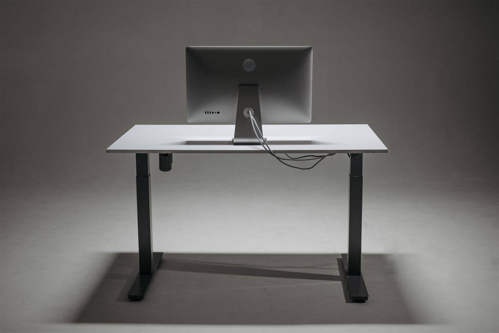

Your desk job is mostly sitting. Stand through some of it.
The global advice is simple: sit less, move more, and any amount counts. A desk that changes height makes the first part easy.
By Sam Okafor, staff writer. Health at work, 4 minute read.
Meetings, email, a lunch eaten at the keyboard. For most office workers, the hours add up to a day spent in a chair. The World Health Organization's advice on this is short: limit the time you spend sitting, and know that any amount of movement is better than none.1
150minutes a week: the WHO's minimum of moderate activity for adults1
31%of adults worldwide, about 1.8 billion people, are not active enough1
The easiest change is the one you make at your desk
Finding a free hour for the gym is hard. Standing up for a long call or an inbox session is easy, if your desk lets you. That's the idea behind height-adjustable desks: press a button, the desk rises, and you keep working.
Standing isn't a workout, and standing all day isn't the goal either. The point is to break up long stretches of sitting, which is exactly what the guidance asks for.1
How much sitting could you swap?
Meet the Kinlo Rise Desk
The Rise Desk keeps it simple: a solid frame, a quiet motor, and three height presets, so switching between sitting and standing takes one press.

Kinlo Rise Desk from $399$549
- Height
- 72 to 122 cm
- Presets
- 3 memory buttons
- Desktop
- 120 or 140 cm wide
- Holds
- Up to 80 kg
Questions people ask first
How long should I stand at first?
Start with short stretches, like one call or one task, and switch back to sitting when you want to. The aim is less sitting overall, not standing all day.
Will it hold two monitors?
Yes. It's rated for up to 80 kg, enough for two monitors, a laptop and the usual desk clutter.
Is it hard to put together?
Most people finish in under an hour with the included tools. Two people make lifting the desktop easier.
Is standing at work right for everyone?
If you have back, joint or circulation problems, talk to your doctor about how long to stand and how often to switch.
Stand up for your next call
Rise Desk from $399 (was $549). Use code WORKDAY10 at checkout for 10% more off.
Get the Rise DeskSources
- World Health Organization. Physical activity (fact sheet). who.int
This is a paid advertorial. Better Workday may earn a commission from purchases made through links on this page. The Rise Desk is office furniture, not a medical device, and is not intended to treat or prevent any condition. Talk to your doctor if you have health concerns about standing at work.